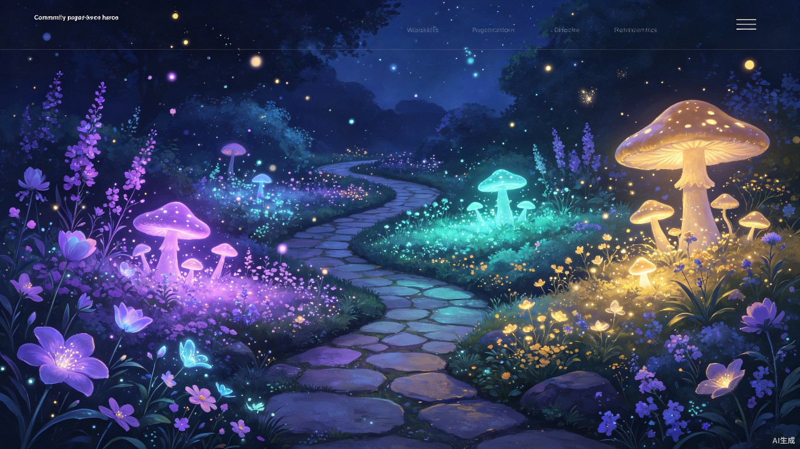

梦境旅人
2 小时前
飞翔在紫色云海
我梦见自己长出了透明的翅膀，在一片无际的紫色云海中翱翔。云朵像棉花糖一样柔软，远处的山峰闪闪发光，仿佛在召唤我飞向未知的彼岸。
神秘
飞翔

分享你的梦境，探索他人的梦世界
梦境旅人
2 小时前
我梦见自己长出了透明的翅膀，在一片无际的紫色云海中翱翔。云朵像棉花糖一样柔软，远处的山峰闪闪发光，仿佛在召唤我飞向未知的彼岸。
星夜漫步
5 小时前
在一栋古老的建筑里，我不断上楼梯，但每走一层楼梯就会从脚下消失。回头望去，只有无尽的深渊。尽管如此，我并没有感到恐惧，反而有一种莫名的平静。
月光捕手
昨天
在一个灯火通明的咖啡馆里，一个完全陌生的面孔坐到了我面前，开始讲述一段我从未经历却似曾相识的故事。那些细节如此真实，醒来后我久久不能忘怀。
晨雾拾光
2 天前
推开那扇褪色的木门，院子里桂花树的香味扑面而来。阳光洒在青石板路上，奶奶在厨房里哼着歌。一切都那么真实，直到我意识到这只是一场梦。
幻影编织者
3 天前
穿越一面巨大的镜子后，来到了一个左右颠倒的世界。文字是反的，道路是反的，连时间似乎都在倒流。我在这个镜像世界中寻找出口，却发现了另一个自己。